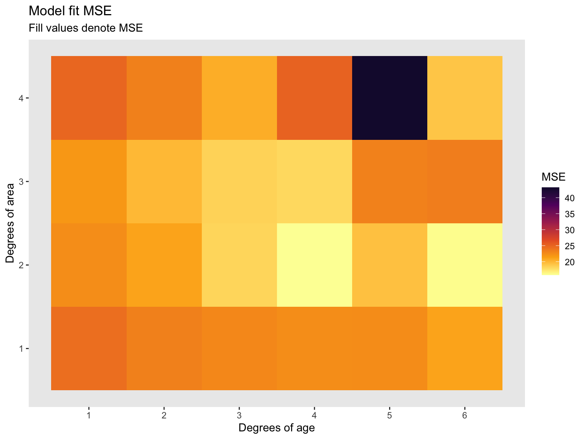

Workflow and Sampling
2026
1. Setup: Learn a basic and efficient setup structure for projects
2. Coding Practice: View some data cleaning problems and their solutions
3. Resampling Methods: Introduction to using hold-out groups and a quick analysis
0. Create a new directory for EC524, somewhere (e.g., Desktop, Documents, iCloud, Dropbox, etc.)
1. Within this directory, create subdirectories
2. Open RStudio
3. Click on File > New Project… > Existing Directory and navigate to the separate project folder under “lab” > “001-projects” and click Create Project. RSudio will open a new session with the working directory set to the project folder
4. Move the data files and Quarto document into the project folder
5. Open the doc001.qmd file in the project folder to get started
0. Create a new directory for EC524, somewhere (e.g., Desktop, Documents, iCloud, Dropbox, etc.)
1. Within this directory, create subdirectories
EC524W25 # Class folder
└── lab # Lab folder
└── 02-projects # Separate folder for the lab 02 project2. Open RStudio
3. Click on File > New Project… > Existing Directory and navigate to the separate project folder under “lab” > “001-projects” and click Create Project. RSudio will open a new session with the working directory set to the project folder
4. Move the data files and Quarto document into the project folder
5. Open the w02-lab.qmd file in the project folder to get started
0. Create a new directory for EC524, somewhere (e.g., Desktop, Documents, iCloud, Dropbox, etc.)
1. Within this directory, create subdirectories
2. Open RStudio
3. Click on File > New Project… > Existing Directory and navigate to the separate project folder under “lab” > “001-projects” and click Create Project. RSudio will open a new session with the working directory set to the project folder
4. Move the data files and Quarto document into the project folder
5. Open the w02-lab.qmd file in the project folder to get started
After completing these steps, here is an visualization of a well organized directory structure:
EC524W25 # Class folder
└──lab # Lab folder
├── 002-projects # Project folder
│ ├── 002-projects.Rproj # Rproj file (we are here)
│ ├── data # Data folder
│ │ ├── data_description.txt
│ │ ├── sample_submission.csv
│ │ ├── test.csv
│ │ └── train.csv
│ └── w02-lab.qmd # Quarto document
└── 003-... # Future lab projects
Download the zip file under lab 02 on the course GitHub repo.
Unzip the file in your “lab” folder.
First, install pacman, a package manager that will help us install and load packages. Recall we only need to install packages once. Ex.
However, we always have to load them in each new R session. We so by running the following code:
Sometimes we have to load a bunch of packages at once, which can be wordy. Ex.
The pacman package can simplify our code with the p_load function. This function allows us to load mulitple pacakges at once. Further, if you do not have it installed, it will install it for you.
You can use either method to load packages. The p_load function is a bit more concise and I use it often.
Now that we have our project set up, let’s load the data. First, let’s see where we are on our computers
You should find the output of the getwd() function to be the path to the project folder. This is our working directory, or . for short. This is where R will look for files when we use relative paths.
If the read worked, the following code should print out the first 6 rows in the console:
If this worked, we are ready to move on. If not, double check your work or wait for me to come around and help.
dplyr questionsIf you have managed to load the “train.csv” data as the train_df object, the following questions will test your knowledge of the dplyr package. There are three questions (easy, medium, and hard), each with a code chunk to fill in your answer.
Before starting the questions, I would clean things up first:
Task: Filter the dataset to only include rows with the two story houses that were built since 2000. Return only the following columns in the output: Id, YearBuilt, HouseStyle. Order the result by year built in descending order.
Expected Result
Task: Create a new column called TotalSF that is the sum of the 1stFlrSF and 2ndFlrSF columns. Filter the dataset to only include rows with a total square footage greater than 3,000. Return only the Id and TotalSF columns in the output.
Expected output
Task: From the dataset, find the average YearBuilt for each HouseStyle, but only include HouseStyles where more than 20 houses were built after the year 2000. Sort the resulting data frame by YearBuilt in descending order.
Expected output
Since we are using some randomization, let’s set a seed so we all get the same results. A random seed is a number used to initialize a pseudorandom number generator. Ex.
These functions are used to ensure that the results of our code are reproducible. This is important for debugging and sharing code and it is a good practice to include them at the beginning of your script whenever you are using randomization.
Load both the train.csv and test.csv data sets. We will be using both.
Double check that everything is loaded correctly. Ex.
These data have really crappy column names. Let’s clean them up using the clean_names function from the janitor package.
For today, we only need a subset. Let’s trim down our data set to four columns:
id: house idsale_price: sale price of the houseage: age of the house at the time of the sale (difference between year sold and year built)area: the non-basement square-foot area of the houseWe can do this in a few different ways but dplyr::transmute() is a very convenient function to use here
It’s always a good idea to look at the new dataframe and make sure it is exactly what we expect it to be. Any of the following is a great way to check:
summary(): provides a quick overview of the dataglimpse(): provides a more detailed overview of each columnskimr::skim(): provides a “nicer” looking overview of the dataView(): opens spreadsheet view of the data id sale_price age area
Min. : 1.0 Min. : 3.49 Min. : 0.00 Min. : 334
1st Qu.: 365.8 1st Qu.:13.00 1st Qu.: 8.00 1st Qu.:1130
Median : 730.5 Median :16.30 Median : 35.00 Median :1464
Mean : 730.5 Mean :18.09 Mean : 36.55 Mean :1515
3rd Qu.:1095.2 3rd Qu.:21.40 3rd Qu.: 54.00 3rd Qu.:1777
Max. :1460.0 Max. :75.50 Max. :136.00 Max. :5642 Rows: 1,460
Columns: 4
$ id <dbl> 1, 2, 3, 4, 5, 6, 7, 8, 9, 10, 11, 12, 13, 14, 15, 16, 17, …
$ sale_price <dbl> 20.85, 18.15, 22.35, 14.00, 25.00, 14.30, 30.70, 20.00, 12.…
$ age <dbl> 5, 31, 7, 91, 8, 16, 3, 36, 77, 69, 43, 1, 46, 1, 48, 78, 4…
$ area <dbl> 1710, 1262, 1786, 1717, 2198, 1362, 1694, 2090, 1774, 1077,…Start by creating a single validation set composed of 30% of our training data.
We can draw the validation sample randomly using the dplyr function sample_frac().
The argument size will allow us to choose the desired sample of 30%.
dplyr’s function setdiff() will give us the remaining, non-validation observation from the original training data.
Finally, let’s check our work and make sure that
training_df + validation_df = house_df
nrow()With training and validation sets we can start train a learner on the training set and evaluate its performance on the validation set. We will use a linear regression model to predict sale_price using age and area. We will give some flexibility to the model by including polynomial terms for age and area.
We proceed with the following steps (algorithm):
1. Train a regression model with various degrees of flexibility
2. Calculate MSE on the training_df
3. Determine which degree of flexibility minimizes validation MSE
We will fit a model of the form:
\[\begin{align*} Price_i = &\beta_0 + \beta_1 * age_i^2 + \beta_2 * age_i + \beta_3 * area_i^2 + \\ &\beta_4 * area_i + \beta_5 * age_i^2 \cdot area_i^2 + \beta_6 * age_i^2 \cdot area_i + \\ & \beta_7 * age_i \cdot area_i^2 + \beta_8 * area_i \cdot age_i \end{align*}\]
Often in programming, we want to automate the process of fitting a model to different specifications. We can do this by defining a function.
We define a function that will fit a model to the training data and return the validation MSE. The function takes two arguments:
deg_age
deg_area
These arguments represent the degree of polynomial for age and area that we want to fit our model.
# Define function
fit_model = function(deg_age, deg_area) {
# Estimate the model with training data
est_model = lm(
sale_price ~ poly(age, deg_age, raw = T) * poly(area, deg_area, raw = T),
data = train_df)
# Make predictions on the validation data
y_hat = predict(est_model, newdata = validation_df, se.fit = F)
# Calculate our validation MSE
mse = mean((validation_df$sale_price - y_hat)^2)
# Return the output of the function
return(mse)
}First let’s create a dataframe that is 2 by 4x6 using the expand_grid() function. We will attach each model fit MSE to an additional column.
Now let’s iterate over all possible combinations (4x6) of polynomial specifications and see which model fit produces the smallest MSE.
Now that we have a 1 by 24 length vector of all possible polynomial combinations, lets attach this vector as an additional column to the deg_df dataframe we assigned a moment ago and arrange by the smalled MSE parameter.
# Add validation-set MSEs to 'deg_df'
deg_df$mse = mse_v
# Which set of parameters minimizes validation-set MSE?
arrange(deg_df, mse)# A tibble: 24 × 3
deg_age deg_area mse
<int> <int> <dbl>
1 4 2 15.8
2 6 2 16.1
3 4 3 18.0
4 3 2 18.3
5 3 3 18.4
6 6 4 19.1
7 5 2 19.4
8 2 3 19.9
9 3 4 20.5
10 6 1 21.0
# ℹ 14 more rowsNow let’s turn this table into a more visual appealing plot. I used ggplot2 to make the following heat map. Recall, less MSE is better.
# Plot
ggplot(data = deg_df, aes(x = deg_age, y = deg_area, fill = mse)) +
geom_tile() +
#hrbrthemes::theme_ipsum(base_size = 12) +
scale_fill_viridis_c("MSE", option = "inferno", begin = 0.1, direction = -1) +
scale_x_continuous(breaks = seq(1, 6, 1)) +
scale_y_continuous(breaks = seq(1, 6, 1)) +
theme(panel.grid.major = element_blank(),
panel.grid.minor = element_blank()) +
labs(
title = 'Model fit MSE',
subtitle = 'Fill values denote MSE',
x = "Degrees of age",
y = 'Degrees of area',
colour = 'Log of MSE')
EC 524 Week 02 Lab | Workflow and Sampling